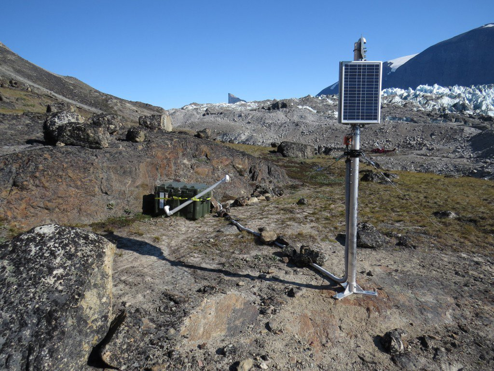

One of my two presentations at the AGU fall meeting this year is the subject of a well done blog post. In the presentation, my co-authors and I reported the detection of over one million icequakes produced near the terminus of a tidewater glacier in west Greenland. Study of these icequakes will allow us to better understand the factors controlling the flow of glacier ice, and ultimately allow scientists to make more precise predictions of sea level rise.
We're presently about half way through the meeting this year and its been a good week so far. During the Saturday and Sunday prior to the beginning of the AGU fall meeting, I participated in a planning workshop to lay the groundwork for a monitoring network to observe ice-ocean interactions in Greenland. I made the case for the value of seismology in understanding tidewater glacier dynamics.
My second invited presentation is a poster on Thursday afternoon. I'll be sharing observations and interpretations of high-rate velocity variations near the front of one of Greenland's largest ocean-terminating glaciers. The presentation is C43B-0805 High-resolution, terrestrial radar velocity observations and model results reveal a strong bed at stable, tidewater Rink Isbræ, West Greenland.

